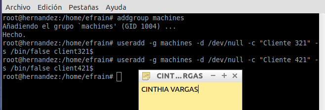

- Módulo: Administración de Sistemas Operativos
- Título del trabajo Samba PDC
- Componentes del grupo: Cinthia A. Vargas Jiménez
- Curso Académico: 2014/2015
- Fecha de entrega: Marzo 2015
SERVIDOR
Después de instalar samba , mediante el comando apt-get install samba, editamos el fichero "/etc/samba/smb.conf" , despues de renombrar el mismo fichero para seguridad
Modificaremos las siguientes líneas del fichero
Crearemos las siguientes carpetas según muestra la siguiente captura de pantalla
Modificaremos el fichero /etc/resolv.conf , con los siguientes datos
El siguiente paso será crear un grupo "machines" , luego crearemos las cuentas de client3 y client4

Luego bloqueamos la cuenta mediante el siguiente comando "passwd -l client321$
Crearemos la cuenta Samba , con el comando "smbpasswd -a -m client321
Crearemos dos grupos "enterprise" y "borg" , y a cada uno le asignaremos los siguientes usuarios
Tambien crearemos una cuenta para el root
Crearemos las carpetas de perfil para cada usuario según se muestra en la siguiente captura
Cambiaremos el nombre de nuestro equipo con "client321" y especificamos el nombre del dominio al que pertenecerá
Para evitar el error , modificaremos lo siguiente, aportado por un compañero de clase en el foro de la asignatura
Volvemos a especificar el dominio y probamos si podemos acceder
Según muestra la siguiente captura , nos hemos unido al dominio correctamente
Accedemos desde nuestro cliente con el usuario "kirk"

Hemos iniciado sesión con el usuario satisfactoriamente